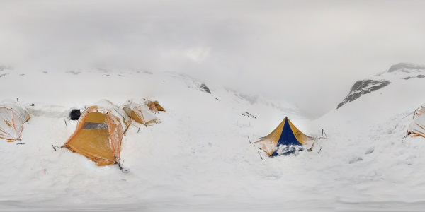
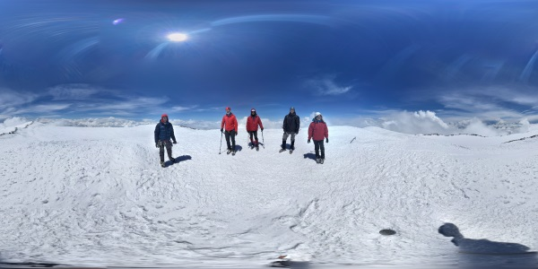

Mount Rainier via Emmons Glacier
On June 13-17, 2016, I climbed to the Mount Rainier summit with guides from
IMG
.
Welcome to GitHub Pages.

Welcome to GitHub Pages.
Welcome to GitHub Pages.
Welcome to GitHub Pages.
